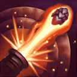
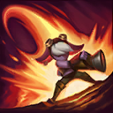
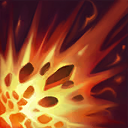

核心裝備
 嗜血者
嗜血者 磁性雷射槍
磁性雷射槍 致死宣告
致死宣告 那歐疾刃
那歐疾刃 無盡之刃
無盡之刃

以下為本站 7.2d 校正後的標準配置；實戰仍需依敵方陣容調整。


技能優先：E > Q > W

隨等級提高崔絲塔娜的普攻、爆炸射擊與毀滅射擊射程，讓她越到後期越能安全輸出。
短時間大幅提高攻速，適合快速疊滿爆炸射擊、推塔或進行長時間普攻輸出。

跳向指定位置，落地造成魔法傷害與緩速；參與擊殺，或滿層爆炸射擊在敵方英雄身上爆炸時，會重置冷卻。
被動使被崔絲塔娜擊殺的敵人爆炸；主動在敵人或防禦塔上放置炸彈，普攻與技能可疊加四次提高傷害，滿層立即爆炸。

向單一敵人發射巨大砲彈，造成高額魔法傷害並將目標擊退，可用於自保、切割或收尾。
3技放炸彈 → 1技加攻速 → 普攻疊層 → 普攻疊層 → 普攻疊層 → 滿層爆炸
先放三技再開一技，用四次普攻快速引爆。敵方準備反打時應邊走邊疊，不要為了最後一層站在控制範圍內。
3技標記 → 1技加攻速 → 普攻疊層 → 2技落地疊層 → 滿層爆炸 → 重置跳出
只有確認炸彈能疊滿、能取得擊殺或敵方控制已交時才跳入；炸彈爆炸刷新二技後，優先跳回安全位置。
4技擊退 → 3技標記 → 1技加攻速 → 拉開普攻 → 2技撤退
敵方貼身時先用大絕拉開，再放炸彈與一技反打；火箭跳躍保留穿牆或遠離下一次突進，不必為了追擊交掉自保技能。
崔絲塔娜前期射程較短，先以穩定補刀和爆炸射擊被動清線為主。對手走位失誤時，先把三技放在英雄或防禦塔，再開一技用普攻與技能疊滿四層；二技是唯一位移，沒有確定擊殺、炸彈重置或敵方關鍵技能已交時，不要主動跳進去。
嗜血者、磁性雷射槍與致死宣告成形後，射程、續戰與點塔能力提升。小規模戰可利用滿層炸彈在英雄身上爆炸刷新火箭跳躍，完成進場、收割與撤退；推塔時三技爆炸半徑更大，但仍要先確認側翼視野。
被動讓普攻、爆炸射擊與毀滅射擊射程隨等級增加，後期應站在前排後方安全輸出。三技搭配一技快速疊滿是主要單體爆發；大絕優先擊退刺客或把威脅推離自己，只有能確定擊殺時才拿來收尾。
對局名單是本站依英雄機制與目前配置整理的參考，不等同固定勝率。
先照標準出裝與符文走；只有敵方陣容真的形成威脅時，再替換必要格子。
觸發：敵方至少有 2 名高生命／高護甲前排，而且團戰多數時間必須先處理前排。
把後期彈性位換成更有效的百分比穿透、削甲或高生命目標傷害。
觸發：敵方有多名能直接貼到後排的刺客／爆發英雄，或你常在開始輸出前就被秒。
守護天使提供物防與復活，適合把最後一個純輸出位換成容錯。
魔提斯深淵提供魔防與低血量魔法護盾，比單純增加輸出更能保住進場或持續輸出。
觸發：敵方有多個硬控，而且控制鏈會讓你直接失去輸出時間。
先購買水銀飾帶取得主動解控，之後再合成水星彎刀；水銀飾帶是合成組件，不是另一件要與水星彎刀互換的成裝。
犧牲部分輸出型傳奇符文，換取韌性與緩速抗性。
提醒：水星彎刀的路線是先購買水銀飾帶，再完成水星彎刀；水銀飾帶不是另一件終局成裝。
觸發：敵方有多名高治療／高吸血英雄，或核心前排能在團戰中大量回血。
標準出裝已經有重創，符文也不必為治療量另外更換。
觸發：敵方有多個大量護盾來源，而且己方沒有其他更適合負責反護盾的英雄。
巨蛇鋒牙降低敵方護盾，只有護盾真的成為團戰主要問題時才值得犧牲一般輸出位。
提醒：反護盾裝通常是彈性位，不要只因敵方有一個小護盾就固定購買。
7.2a 飛龍路第三批正式攻略：技能名稱與核心機制依 Riot Games 台灣《激鬥峽谷》崔絲塔娜英雄頁校正；出裝、符文、召喚師技能、技能順序與實戰方向交叉參考 WildRiftFire Patch 7.2a 後整合。Tier 維持本站既有飛龍路評級。｜v67：套用吉茵珂絲 v64 固定母版。｜v76 第二階段：新增 3 位合適輔助與搭配理由，並完成攻略內容欄位驗收。
本站於 2026-08-27 依 Patch 7.2d 重新檢查此配置。 Tier、出裝、符文與對局屬於 Wild Rift Guide 的整理與分析，不是 Riot Games 官方推薦；版本改動後會再依官方公告與實戰資料校正。